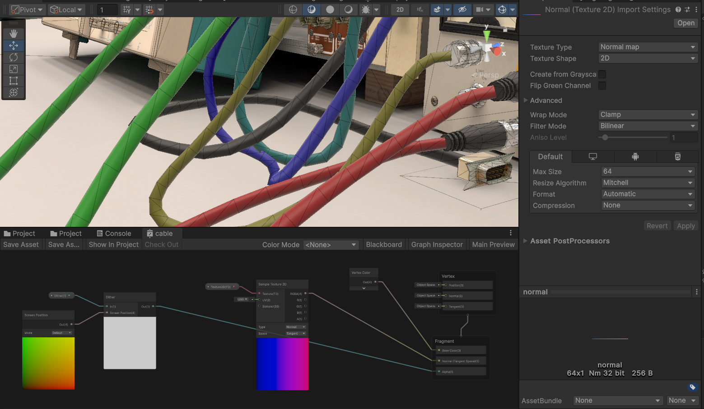

Nuclear engineering
virtual lab
A nuclear physics lab in your browser


This is a virtual lab for Purdue University nuclear engineering undergrads. I'm responsible for nearly the entire Unity project, from design, to artwork, to scripting & shader programming. Reception among students has been very positive.
Purdue University Prof. Stylianos Chatzidakis served as P.I. and led this project to increase access to curriculum-necessary lab equipment.
Project is ongoing...
3D artwork
Fullscreen ➔

Optimized for low-spec devices such as Chromebooks and tablets. All together ~25,000 triangles rendered across 22 draw events. Download size is just under 50mb.

- Texel density is lower on obscure & unseen surfaces.
- I bake lighting directly into equipment textures (not separate lightmaps) since each appears only once.
- Dynamic parts (dials, switches, etc) have bespoke reflection cubemaps to kill specular ugliness.
- Some movable objects drop soft-shadow decals for clearer positioning.


Signal processing & equipment simulation
Each appliance simulates all of its necessary inputs and outputs according to stats and specs provided by Prof. Chatzidakis and his team.
The lab targets 100,000 data samples per second, each processed by the equipment. WebGL & WebAssembly bring some restrictions: single CPU core, no compute shaders, and no Unity burst compiler. Even so, mid-spec devices run the simulation at full speed
The data histogram and oscilloscope line graph displays are simple shaders.
Cable visuals (Obi Rope)
For cable physics I use Obi Rope ➔. My Obi settings are tuned for a decent balance between visual quality and performance.
Cable mesh updates are expensive; time increases linearly with vertex count, so I use flat ribbon meshes with cylindrical normals.
Cable colors are random so that users can easily see where they lead.

The cables become semi-transparent when they may obscure important elements.
Camera
The user must not be allowed to lose draggable objects behind other objects or off screen, so I don't allow dropping objects behind UI elements, outside of the camera bounds, or while the camera is transitioning.

Camera 'frames' keep important objects in view regardless of aspect ratio (especially important since the sidebar menu is resizable and affects the size of the 3D view region).
Controls must be large enough for easy interaction, so I position frames to keep controls at sane screen-sizes. I also keep related frames and controls close together.